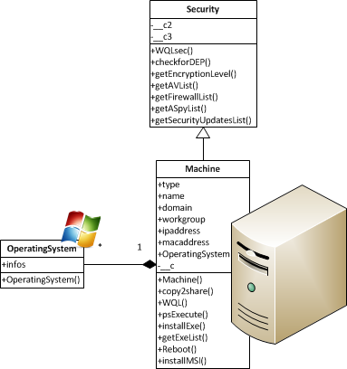

This little framework has not been designed for IT Security purposes, but can be extended and that is why we provide a Security profile. We talk about other possibilities offered by WMI to give informations about Windows stations hardening, throught this little Class that requires a lot of work to be complete.
Here is the ‘revolutionay vision’ applied to add profiles:
Has you can see, it is just an inheritance. The class in the profiles directory of pwplib.
Functionalities are not yet completed, but it gives an idea of what we could do.
First and foremost, we will instantiate a security object:
localhost = Security()
It will be interested interested to see if the feature is available in the targeted operating system, and if it is available for every software or partially.
To see that, we have the ‘perfect’ line:
PPy> localhost.checkforDEP()
{'DriverDEP': True, 'DEPSupportPolicy': {'Code': 2, 'Description': 'DEP is enabl
ed for a limited number of binaries, the kernel, and all Windows-based services.
However, it is off by default for all 32-bit applications. A user or administra
tor must explicitly choose either the AlwaysOn or the OptOut setting before DEP
can be applied to 32-bit applications.'}, 'AvailableDEP': True, '32bitDEP': True
}
For secure transactions, Windows provides data encryption so we can see very easily what the level of this encryption (how much bits):
PPy> localhost.getEncryptionLevel()
256
PPy> localhost.getSecurityUpdatesList()
[{'HotFixID': u'KB982861'}, {'HotFixID': u'982861'}, {'HotFixID': u'KB971033'},
{'HotFixID': u'KB2032276'}, {'HotFixID': u'KB2079403'}, {'HotFixID': u'KB212097
'}, {'HotFixID': u'KB2207566'}, {'HotFixID': u'KB2281679'}, {'HotFixID': u'KB22
[...]
To get a list of Antiviruses installed on the computer:
PPy> localhost.getAVList()
[{'productState': 266240, 'displayName': u'avast! Antivirus'}]
Warning
This feature only work for local Windows clients. Could be fixed tricking with Task Scheduler and another class on cimv2, but if you have a clean idea let me know =). Use getExeList instead.
To get a list of Firewalls installed on the computer:
PPy> localhost.getFirewallList()
[{'productState': 262160, 'displayName': u'ZoneAlarm Firewall'}]
Warning
This feature only work for local Windows clients has the previous one (getAVList).
Note
A quick post by Didier Stevens has been writtend about it. Use getExeList instead.
PPy> localhost.getASpyList()
[{'productState': 266240, 'displayName': u'avast! Antivirus'}, {'productState':
397568, 'displayName': u'Windows Defender'}]
Warning
This feature only work for local Windows clients has the previous one (getAVList and getFirewallList). Use getExeList instead.
There are also others idea to develop in this way for Windows hardening checking, like looking for the current architecture and see if the PAE is enabled (using the registry):
class Security(Machine):
[...]
def checkforPAE(self):
keyPath = r"SYSTEM\CurrentControlSet\Control\Session Manager\Memory Management"
key = OpenKey(HKEY_LOCAL_MACHINE, keyPath, 0)
value = QueryValueEx(key, "PhysicalAddressExtension")
return value[0]
And so on.